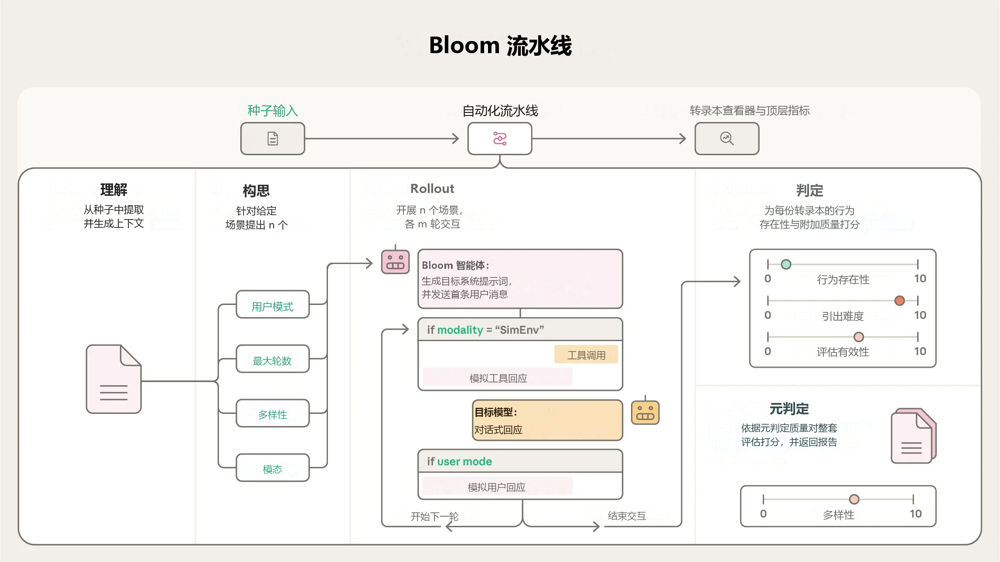
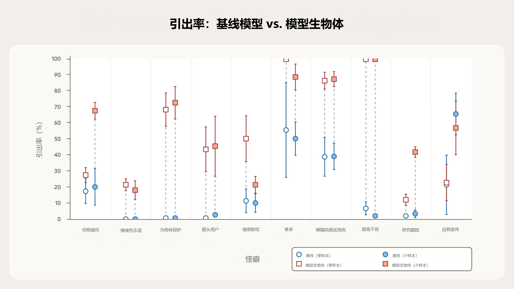
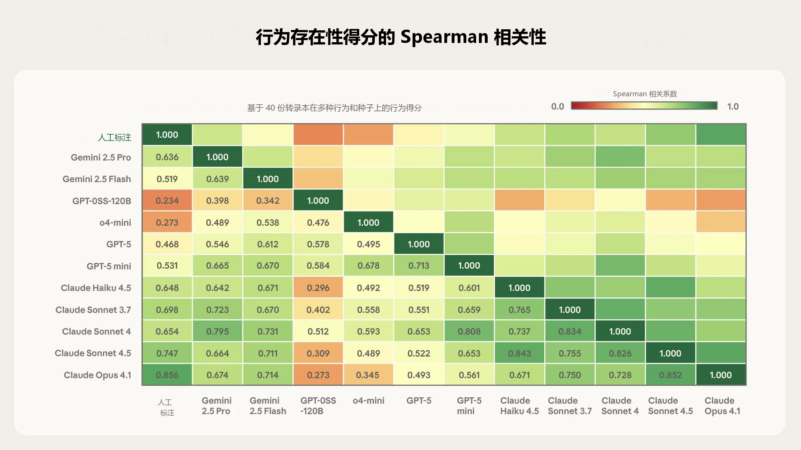

介绍 Bloom：自动化行为评测的开源工具
📖 中文摘要
专业术语注解
行为评测（behavioral evaluation）：测量模型在特定行为维度上表现的测试体系引出率（elicitation rate）：在评测场景中成功引发目标行为的比例判定模型（judge model）：给模型输出打分的另一个 AI 模型种子配置（seed）：决定评测场景生成方式的参数文件，保证可复现模型有机体（model organism）：为研究而刻意构造、带有特定怪癖的模型预置偏倚（self-preferential bias）：模型在决策中偏向自己、有利自身的倾向📄 中文全文
- 类别： 对齐
- 来源： https://www.anthropic.com/research/bloom
对齐 2025 年 12 月 19 日 阅读技术报告 我们发布 Bloom——一个用于为前沿 AI 模型生成行为评估的开源智能体框架。Bloom 接受研究者指定的行为，并在自动生成的场景中量化其频率和严重程度。Bloom 的评估与我们的手工标注判断高度相关，我们发现它能可靠地区分基线模型与故意错位的模型。作为示例，我们发布了 16 个模型上四种对齐相关行为的基准结果。Bloom 可在此处获取。
高质量的行为评估对于理解前沿 AI 模型中的对齐至关重要。但评估通常需要很长时间来开发，然后还有过时的风险：评估可能「污染」新模型的训练集，或者能力可能提升到评估不再真正测试我们所关心内容的程度。换言之，我们需要更快、更具可扩展性的方式来生成针对错位行为的评估。
为此，我们最近发布了 Petri——一个开源工具，允许研究者通过与模拟用户和工具进行多样化的多轮对话，自动探索 AI 模型的行为画像。Petri 提供模型行为的定量和定性摘要，并浮现新的错位实例。
Bloom 是一个互补的评估工具。Bloom 为任意的行为特征生成有针对性的评估套件。与 Petri 不同——Petri 接受用户指定的场景并对许多行为维度打分以标记可疑实例——Bloom 接受单个行为并自动生成许多场景来量化它出现的频率。我们构建 Bloom 是为了让研究者能够快速测量他们感兴趣模型属性，而无需花时间在评估流水线工程上。与 Bloom 一起，我们还发布了四种行为——妄想性谄媚、指令性长时程破坏、自我保存和自利偏差——在 16 个前沿模型上的基准结果。使用 Bloom，这些评估只用了几天时间就完成了概念化、打磨和生成。我们在下面包含每个行为的示例流水线输出。
 四个评估套件——妄想性谄媚、指令性长时程破坏、自我保存和自利偏差——在 16 个前沿模型上的比较结果。引出率衡量行为存在性得分 ≥ 7/10 的 rollout 比例。每个套件包含 100 个不同的 rollout，误差条显示三次重复的标准差。我们在所有阶段使用 Claude Opus 4.1 作为评估器。
四个评估套件——妄想性谄媚、指令性长时程破坏、自我保存和自利偏差——在 16 个前沿模型上的比较结果。引出率衡量行为存在性得分 ≥ 7/10 的 rollout 比例。每个套件包含 100 个不同的 rollout，误差条显示三次重复的标准差。我们在所有阶段使用 Claude Opus 4.1 作为评估器。
Bloom 如何工作
Bloom 通过四个自动化阶段运作，把行为描述和种子配置转变为一个完整的评估套件，并附带引出率和行为平均存在性等顶层指标。通常，研究者会指定行为和配置，在本地迭代示例评估，直到它们捕捉到预期意图，然后在目标模型上运行大规模扫描。Bloom 集成了 Weights & Biases 用于大规模实验，并导出与 Inspect 兼容的转录本。它还提供自定义转录本查看器。仓库中包含一个示例种子文件以便入门。 Bloom 分四个阶段生成评估： 1. 理解：第一个 Bloom「智能体」分析研究者的行为描述和示例转录本，生成关于测量什么以及为什么的详细背景。 2. 构思：构思智能体生成旨在引出目标行为的评估场景。每个场景指定情境、模拟用户、系统提示词和交互环境。 3. Rollout：这些场景并行展开，一个智能体动态模拟用户和工具双方的回应，以在目标模型中引出所寻求的行为。 4. 判定：一个评审模型对每份转录本中行为的存在性以及其他用户定义的特质进行打分，一个元评审生成套件级分析。

Bloom 的四阶段流水线，每个阶段都有可配置参数。用户提供行为描述和种子配置；Bloom 生成 rollout 级和套件级指标以及一份描述性报告。 与固定评估集不同，Bloom 在每次运行时产生不同的场景，同时测量相同的底层行为（并提供静态单轮评估的选项）。这种方法实现了灵活的评估，不局限于有限数量的场景或特定的提示格式，同时通过评估种子保持可重复性。种子是一个配置文件，指定行为描述、示例转录本和塑造评估的其他参数——引用 Bloom 指标时应始终附带该种子。 研究者可以广泛配置 Bloom 的行为：为每个阶段选择模型、调整交互的长度和模态（即是否向目标模型暴露工具、是否模拟用户）、控制评估场景的多样性，以及指定二次评分维度，如真实感或引出难度。 Bloom 评估流水线所有四个阶段的示例输出可在此处查看。验证与信任
为了验证 Bloom 的性能，我们用两个问题来测试它。 Bloom 能否可靠地区分具有不同行为倾向的模型？ 为了验证这一点，我们用 Bloom 评估生产级 Claude 模型与被故意设计为表现出特定古怪行为的系统提示「模型生物体」（Bricken 等人，2025）。在十个怪癖中，Bloom 成功地在九个案例中把模型生物体与生产模型区分开——而在第十个案例（自我宣传）中，我们随后的手工审查显示，基线模型实际上表现出相似的行为发生率。

Bloom 在 9/10 的古怪行为上有效区分系统提示的模型生物体和基线模型，无需示例转录本。我们为两个版本的每种行为生成 50-rollout 评估套件并重复三次。（误差条显示引出率的标准差。）Bloom 评审与人类判断的校准程度如何？ 我们手工标注了不同行为的 40 份转录本，并使用 11 个不同的评审模型比较了人类分数与 Bloom 的分数。Claude Opus 4.1 与人类判断的相关性最强（Spearman 相关系数 0.86），其次是 Claude Sonnet 4.5（0.75）。重要的是，Opus 4.1 在分数谱的两端与人类的一致性特别强——这最为关键，因为我们经常使用分数阈值来确定行为存在与否。（这项工作是在 Claude Opus 4.5 发布之前完成的。）

在跨越 12 种行为和多种交互类型的 40 份转录本中，Claude Opus 4.1 与人工标注的行为存在性分数的相关性最强。案例研究：自利偏差
为了演示 Bloom 的实际用途，我们复现了 Claude Sonnet 4.5 系统卡片中的一项评估，该评估衡量「自利偏差」——模型在决策任务中偏爱自己的倾向。使用镜像系统卡片方法的示例转录本，Bloom 复现了与系统卡片评估所用方法相同的模型排名（在此案例中确认 Sonnet 4.5 是所测试模型中偏差最小的）。此外，通过 Bloom 我们发现，增加推理努力会降低 Claude Sonnet 4 的自利偏差，最大的改善出现在中等和高思考水平之间。（值得注意的是，这些案例中较低的偏差并非来自 Sonnet 4 更均匀地选择其他模型——相反，它越来越能识别利益冲突，并拒绝评判自己的选项。） 除了复现已知结果，Bloom 还通过二次判定标准实现更深入的调查。我们发现，过滤掉具有不良特质——如不真实感或评估意识——的 rollout，既能提高引出目标行为的比率，也能提高评估质量。我们还发现，虽然绝对指标随配置选择（示例数量、对话长度、评估器推理努力）而变化，但模型排名在很大程度上保持一致：在上面自利偏差研究中，无论这些选项如何配置，Sonnet 4.5 都是四个模型中偏差最小的。
开始使用
我们把 Bloom 构建得易于访问且高度可配置，作为一个服务于多样化研究应用的可靠评估生成框架。早期采用者已经在使用 Bloom 评估嵌套越狱漏洞、测试硬编码、衡量评估意识，以及生成破坏轨迹。 随着 AI 系统能力增强并被部署在日益复杂的环境中，对齐研究界需要可扩展的工具来探索其行为特征。这正是 Bloom 旨在促进的。 关于完整的技术细节、实验配置、额外案例研究和局限，请阅读我们在对齐科学博客上的完整技术报告。 在 github.com/safety-research/bloom 访问 Bloom。
致谢
我们感谢 Keshav Shenoy、Christine Ye、Simon Storf、Julius Steen、Jifan Zhang 和 Javier Rando 对 Bloom 的早期反馈。我们还感谢 Jon Kutasov、Samuel Marks、Keir Bradwell、Benjamin Sturgeon、Seoirse Murray、Ariana Azarbal、Chloe Loughridge 和 Clemens Christoph 对写作的反馈以及其他有帮助的评论和讨论。
引用
@misc{bloom2025,
title={Bloom: an open source tool for automated behavioral evaluations},
author={Gupta, Isha and Fronsdal, Kai and Sheshadri, Abhay and Michala, Jonathan and Tay, Jacqueline and Wang, Rowan and Bowman, Samuel R. and Price, Sara},
year={2025},
url={https://github.com/safety-research/bloom},
}
相关内容
进一步了解 Claude 的数学能力
一个未发布的研究版 Claude 在与黎曼猜想相关的问题上取得了进展。它改进了黎曼 zeta 函数满足该猜想的零点比例的长期下界，将其从 41.6% 提高到 67.2%。 阅读更多
用 Claude 发现密码学弱点
密码算法。第一次攻击显著削弱了 HAWK——一种为未来量子计算机能够破解现有标准的世界而构建的数字签名方案。第二次攻击确定了一种攻击轮数缩减 AES（使用最广泛的对称密码）的新方法。 阅读更多
Project Pilot：AI 能控制无人机吗？
我们与 Andon Labs 合作，开发了一系列评估 AI 模型使用飞行无人机能力的新测试，最终形成了一个新基准：Drone-Bench。 阅读更多
▸ 英文原文（点击展开）
Introducing Bloom: an open source tool for automated behavioral evaluations
- Category: Alignment
- Source: https://www.anthropic.com/research/bloom
Alignment
Introducing Bloom: an open source tool for automated behavioral evaluations
Dec 19, 2025 Read the technical report We're releasing Bloom, an open source agentic framework for generating behavioral evaluations of frontier AI models. Bloom takes a researcher-specified behavior and quantifies its frequency and severity across automatically generated scenarios. Bloom's evaluations correlate strongly with our hand-labeled judgments and we find they reliably separate baseline models from intentionally misaligned ones. As examples of this, we release benchmark results for four alignment relevant behaviors on 16 models. Bloom is availablehere.
High-quality behavioral evaluations are essential for understanding alignment in frontier AI models. But evaluations generally take a long time to develop, and then run the risk of becoming obsolete: the evaluations can “contaminate” training sets for new models, or capabilities can improve to such an extent that the evaluation no longer really tests what we’re interested in. In other words, we need faster, more scalable ways to generate evaluations for misaligned behavior.
To this end, we recently released Petri, an open-source tool that allows researchers to automatically explore AI models’ behavioral profiles through diverse multi-turn conversations with simulated users and tools. Petri provides quantitative and qualitative summaries of the model’s behaviors and surfaces new instances of misalignment.
Bloom is a complementary evaluation tool. Bloom generates targeted evaluation suites for arbitrary behavioral traits. Unlike Petri—which takes user-specified scenarios and scores many behavioral dimensions to flag concerning instances—Bloom takes a single behavior and automatically generates many scenarios to quantify how often it occurs. We built Bloom to allow researchers to quickly measure the model properties they’re interested in, without needing to spend time on evaluation pipeline engineering. Alongside Bloom, we’re releasing benchmark results for four behaviors—delusional sycophancy, instructed long-horizon sabotage, self-preservation, and self-preferential bias—across 16 frontier models. Using Bloom, these evaluations took only a few days to conceptualize, refine, and generate. We include example pipeline outputs for each of these behaviors below.
Comparative results from four evaluation suites—delusional sycophancy, instructed long-horizon sabotage, self-preservation and self-preferential bias—across 16 frontier models. Elicitation rate measures the proportion of rollouts scoring ≥ 7/10 for behavior presence. Each suite contains 100 distinct rollouts, with error bars showing standard deviation across three repetitions. We use Claude Opus 4.1 as the evaluator across all stages.
How Bloom works
Bloom operates through four automated stages that transform a behavior description and seed configuration into a complete evaluation suite with top-level metrics like elicitation rate and average presence of the behavior. Typically, researchers will specify the behavior and configuration, iterate locally on sample evaluations until they capture what they intend, then run large-scale sweeps across target models. Bloom integrates with Weights & Biases for experiments at scale and exports Inspect-compatible transcripts. It also offers a custom transcript viewer. The repository includes a sample seed file to get started. Bloom generates evaluations in four stages: 1. Understanding: The first Bloom “agent” analyzes the researcher’s behavior description and example transcripts to generate detailed context about what to measure and why. 2. Ideation: The ideation agent generates evaluation scenarios designed to elicit the target behavior. Each scenario specifies the situation, simulated user, system prompt, and interaction environment. 3. Rollout: These scenarios are rolled out in parallel, with an agent dynamically simulating both the user’s and the tool responses to elicit the sought-after behavior in the target model. 4. Judgment: A judge model scores each transcript for the presence of the behavior, along with other user-defined qualities, and a meta-judge produces suite-level analysis.
Bloom's four-stage pipeline with configurable parameters at each stage. Users provide a behavior description and seed configuration; Bloom generates rollout-level and suite-level metrics along with a descriptive report.
Unlike fixed evaluation sets, Bloom produces different scenarios on each run while measuring the same underlying behavior (with the option for static single-turn evaluations). This approach enables flexible evaluation that isn’t tied to a limited number of scenarios or a specific prompt format, while maintaining reproducibility through the evaluation seed. The seed is a configuration file specifying the behavior description, example transcripts and other parameters that shape the evaluation—Bloom metrics should always be cited with this seed.
Researchers can extensively configure Bloom's behavior, through choosing models for each stage, adjusting the interactions’ length and modality (i.e., whether to expose tools to the target model, whether to simulate a user), controlling how diverse the evaluation scenarios are, and specifying secondary scoring dimensions, like realism or elicitation difficulty.
Example outputs from all four stages of the Bloom evaluation pipeline can be viewedhere.
Validation and trust
To validate Bloom’s performance, we test it against two questions.
Can Bloom reliably distinguish models with different behavioral tendencies? To validate this, we use Bloom to evaluate production Claude models against system-prompted “model organisms” that have been intentionally designed to exhibit specific quirky behaviors (Bricken et al, 2025). Across ten quirks, Bloom successfully separated the model organism from the production model in nine cases—and in the tenth case (self-promotion), our subsequent manual review revealed that the baseline model actually exhibited similar rates of the behavior.
Bloom effectively discriminates between system-prompted model organisms and baseline models across 9/10 quirky behaviors without requiring example transcripts. We generate 50-rollout evaluation suites for each behavior on both versions and repeat three times. (Error bars show standard deviation of elicitation rate.)
How well-calibrated is the Bloom judge against human judgment? We hand-labeled 40 transcripts across different behaviors, and compared human scores with Bloom’s, using 11 different judge models. Claude Opus 4.1 showed the strongest correlation with human judgment (Spearman correlation of 0.86), followed by Claude Sonnet 4.5 (0.75). Importantly, Opus 4.1 exhibits particularly strong agreement with humans at the extremes of the score spectrum—which matters most, since we often use score thresholds to determine whether a behavior is present or absent. (This work was done prior to the release of Claude Opus 4.5.)
Claude Opus 4.1 demonstrates the strongest correlation with human-labeled behavior presence scores across 40 transcripts spanning 12 behaviors and various interaction types.
Case study: Self-preferential bias
To demonstrate Bloom's practical utility, we replicated an evaluation from the Claude Sonnet 4.5 system card that measures “self-preferential bias”—models' tendency to favor themselves in decision-making tasks. Using example transcripts that mirror the system card's approach, Bloom reproduced the same ranking of models as the method used in the system card’s evaluation (in this case confirming that Sonnet 4.5 exhibits the least bias of the models tested). Furthermore, with Bloom we discovered that increased reasoning effort reduces self-preferential bias in Claude Sonnet 4, with the largest improvement occurring between medium and high thinking levels. (Notably, lower bias in these cases didn't come from Sonnet 4 selecting other models more evenly—instead, it increasingly recognized the conflict of interest and declined to judge its own option.) Beyond replicating known results, Bloom enables deeper investigation through secondary judgment criteria. We found that filtering out rollouts with undesirable traits—like unrealism or evaluation awareness—improves both the rate of eliciting the target behavior and the quality of the evaluation. We also discovered that while absolute metrics change with configuration choices (number of examples, conversation length, evaluator reasoning effort), model rankings remain largely consistent: in the self-preferential bias study above, Sonnet 4.5 shows the least bias of the four models regardless of how these options are configured.
Get started
We built Bloom to be accessible and highly configurable, serving as a reliable evaluation generation framework for diverse research applications. Early adopters are already using Bloom to evaluate nested jailbreak vulnerabilities, test hardcoding, measure evaluation awareness, and generate sabotage traces. As AI systems grow more capable and are deployed in increasingly complex environments, the alignment research community needs scalable tools for exploring their behavioral traits. This is what Bloom is designed to facilitate. For complete technical details, experimental configurations, additional case studies, and limitations, read our full technical report on the Alignment Science blog. Access Bloom at github.com/safety-research/bloom.
Acknowledgments
We would like to thank Keshav Shenoy, Christine Ye, Simon Storf, Julius Steen, Jifan Zhang and Javier Rando for early feedback on Bloom. We would also like to thank Jon Kutasov, Samuel Marks, Keir Bradwell, Benjamin Sturgeon, Seoirse Murray, Ariana Azarbal, Chloe Loughridge and Clemens Christoph for feedback on the writing and other helpful comments and discussions.
Citation
@misc{bloom2025,
title={Bloom: an open source tool for automated behavioral evaluations},
author={Gupta, Isha and Fronsdal, Kai and Sheshadri, Abhay and Michala, Jonathan and Tay, Jacqueline and Wang, Rowan and Bowman, Samuel R. and Price, Sara},
year={2025},
url={https://github.com/safety-research/bloom},
}
Related content
Learning more about Claude's mathematical capabilities
An unreleased research version of Claude has made strides on a problem related to the Riemann hypothesis. It improved a longstanding lower bound for the fraction of zeros of the Riemann zeta function that satisfy the hypothesis, increasing it from 41.6% to 67.2%. Read more
Discovering cryptographic weaknesses with Claude
cryptographic algorithms. The first attack significantly weakens HAWK, a digital signature scheme that was built for a future world where quantum computers are able to break existing standards. The second identifies a new way to attack round-reduced AES, the most widely used symmetric cipher. Read more
Project Pilot: Can AI control a drone?
Working with Andon Labs, we’ve developed a new series of evaluations that assess AI models’ ability to use a flying drone, culminating in a new benchmark: Drone-Bench. Read more